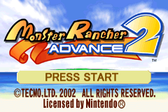

Monster Rancher Advance 2 (USA)
SRAM 256K VRAM Tile Sheet
Cartridge Identity
- Game Code
A2QE(FamilyA2Q)- Header Title
MONSTERRANC2- Maker / Revision
9B/ rev0- ROM Size
- 8.0 MiB (8,388,608 B)
- Save Media
SRAM 256K- SHA-256
05778f76f57b6ab8123be9c8d7c9db40f0d6bcc52b4a66fb70b32d88b57ac4e6- Engine / SDK Group
comm-058(2 families)
Screenshots


ROM Assets, Compression & Audio
- BIOS Compression
- LZ77 (
0x10): 74 streams · RLE (0x30): 2,809 streams - ROM Pointer Tables
- 122 tables (8 pointing to validated compressed streams)
- SDK Backup Tags
SRAM_F_V102- VRAM / Palette Snapshot
- 1,218 non-zero 8×8 tiles · 18 palettes · Direct ROM matches: 0 VRAM blocks, 2 palette blocks

Hardware MMIO Subsystems
dma_transfer0x8008170ppu_display0x8007dbc,0x8008170,0x801e3d8,0x80231c4,0x8065f6c,0x81c6ff0,0x81c74b8save_bus_sram_flash0x8073168
Regional Variants & Revisions (Family A2Q)
- Monster Farm Advance 2 (Japan) (
A2QJ, 8 MiB)